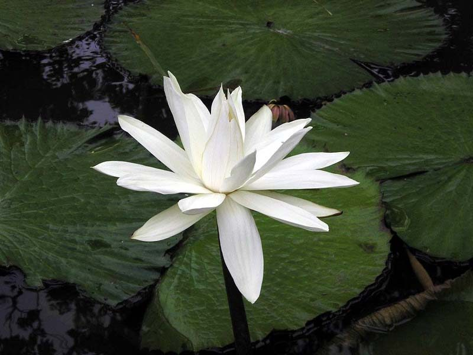

हेयरी वॉटर लिलीHairy Water Lily
Nymphaea pubescens · Nymphaeaceae · FLR-0373

- Scientific name वैज्ञानिक नाम
- Nymphaea pubescens Willd.
- Family कुल
- Nymphaeaceae
- Hindi हिंदी
- हेयरी वॉटर लिली / छोटा कंवल
- Local names स्थानीय नाम
- hairy water lily, chota kanval
- Status here यहाँ की स्थिति
- native
- Movement आवागमन
- Resident, here all year
- Known from कहाँ दर्ज
- Others have published records from the wider Awadh–Purvanchal plain, none yet from Basti–Ayodhya अवध–पूर्वांचल से दूसरों के प्रकाशित अभिलेख, बस्ती–अयोध्या से अभी नहीं
- IUCN IUCN
- LC
- Review समीक्षा
- not yet reviewed
When to look कब देखें
Present all year. साल भर मौजूद।
Uses and possibilities उपयोग और संभावनाएँ
“Traditional medicine” means a documented traditional use, not a claim that it works. Nothing on this page is medical advice.
Drawn from the documented uses in the profile below, where each is labelled traditional, current or a research lead. All uses →
Tell it apart from इनसे अलग पहचानें
हेयरी वॉटर लिली / Hairy Water Lily
Nymphaea pubescens Willd. — Nymphaeaceae
हेयरी वॉटर लिली — पूर्वी उत्तर प्रदेश के पुराने तालाबों और झीलों में खिलने वाला एक बेहद सुंदर सफेद जलीय फूल है जिसे देहात में 'कोका' या 'सफेद कुमुद' कहते हैं। इसके गोल पत्ते पानी की सतह पर तैरते हैं जिनकी निचली सतह पर मखमली रोएं और उभरी हुई नसें होती हैं तथा पत्तों के किनारे तीखे दांतों वाले होते हैं। इसके फूल रात को खिलते हैं और सुबह धूप चढ़ते ही बंद हो जाते हैं। इसके कंद और बीज भोजन और पारंपरिक औषधि के रूप में काम आते हैं।
Quick Identification त्वरित पहचान
| Feature | Description |
|---|---|
| Growth habit | Perennial rooted aquatic herb anchored in pond mud by a stout, tuberous rhizome |
| Leaf undersurface | Densely pubescent (velvety hairy) lower leaf surface with prominently raised reticulate veins |
| Leaf margins | Distinctly and sharply dentate or serrated margins with acute teeth |
| Flowering habit | Strictly nocturnal flowering; blossoms open at dusk and remain open until mid-morning |
| Flower color | Pure white to creamy-white petals with bright yellow central stamens; rarely flushed pale pink |
Floating-leaved rooted water lily easily distinguished from other water lilies by its velvety hairy lower leaf surface, sharply toothed leaf margins, and fragrant white night-opening flowers.
Field tip: Turn over a floating leaf: the undersurface of Nymphaea pubescens is softly hairy with raised veins, unlike the smooth underside of the blue water lily.
हिंदी: पानी पर तैरते गोल पत्ते जिनके किनारे आरी की तरह कटे होते हैं और निचली सतह पर मखमली रोएं होते हैं। इसके सफेद फूल रात के समय खिलते हैं और इनमें भीनी खुशबू होती है।
Morphology आकारिकी
Biometrics from open botanical literature:
| Feature | Characteristic | Source |
|---|---|---|
| Underground rhizome | Short, erect, tuberous rootstock buried deep in benthic mud | Literature |
| Floating leaves | Broadly circular to oval, with deep basal sinus and sharply toothed margins | Literature |
| Leaf pubescence | Lower leaf surface densely covered with fine velvety hairs | Literature |
| Flower structure | Solitary, nocturnal, borne on long spongy cylindrical peduncles above surface | Literature |
| Typical dimension | Measurement not available in consulted open sources. | Open sources |
The plant is anchored in muddy pond bottoms by a perennial tuberous rhizome. The long, spongy petioles are cylindrical and air-filled, allowing the leaves to adjust to fluctuating water depths. The floating leaf blades are broadly ovate to suborbicular, deeply notched at the base where the petiole attaches. The upper surface is dark green and glabrous, while the lower surface is densely pubescent with prominent elevated venation. The flowers are solitary, night-blooming, featuring four green sepals with prominent longitudinal veins, numerous oblong white petals, and bright yellow stamens.
हिंदी: इसकी जड़ तालाब की कीचड़ में जमी होती है और डंडियां खोखली और हवा से भरी होती हैं। पत्ता ऊपर से चिकना हरा और नीचे से मखमली रोएंदार होता है। इसके सफेद फूल में चार हरे बाह्यदल और कई सफेद पंखुड़ियां होती हैं जिनके बीच में पीले पुंकेसर होते हैं।
Behaviour & Ecology पारिस्थितिक भूमिका
A key primary producer and structural component of shallow lowland wetland ecosystems. Its large floating leaves form extensive vegetative canopies over pond surfaces, casting dense shade that suppresses excessive benthic algal blooms and moderates water temperatures during scorching pre-monsoon heat. The expansive leaf cover creates sheltered microhabitats utilized by young fishes, frogs, and diving insects. When seasonal ponds dry out during severe summer droughts, the foliage withers, but the starch-rich tuberous rhizome survives dormant deep in the baked mud.
हिंदी: इसके बड़े-बड़े तैरते पत्ते तालाब के पानी को तेज धूप से बचाते हैं और पानी को ठंडा रखते हैं जिससे मछलियों को गर्मी से राहत मिलती है। तालाब सूखने पर भी इसका कंद कीचड़ में सुरक्षित रहता है और बारिश में दोबारा उग आता है।
Life Cycle / Phenology जीवन चक्र
Vegetative sprouting begins in late spring and early monsoon as water bodies refill with rainwater. Flower buds emerge above the water surface from July through November, with peak blooming occurring in post-monsoon months when pond levels are stable. Individual flowers open around sunset, remaining open through the dark night and closing by mid-morning as sunlight intensifies. Flowers repeat this cycle for three to four consecutive nights. After fertilization, the peduncle coils spirally, pulling the developing spongy fruit underwater to ripen.
हिंदी: बरसात के साथ इसमें नए पत्ते निकलते हैं और जाड़े तक फूल खिलते हैं। फूल शाम को सूरज ढलते समय खुलता है और अगली सुबह दस बजे तक बंद हो जाता है। फूल मुरझाने के बाद उसकी डंडी मुड़कर फल को पानी के नीचे ले जाती है जहां वह पकता है।
Associated Species / Interactions संबद्ध प्रजातियाँ और सहजीवन
Maintains rich ecological interactions with wetland wildlife. The night-opening fragrant flowers attract nocturnal beetles and crepuscular bees and other pollinating insects, which forage for pollen during dawn hours before the petals close. The lower surfaces of the floating leaves are grazed by aquatic snails and herbivorous invertebrates. Waterfowl, including whistling ducks and moorhens, forage extensively among lily beds, consuming ripe seeds and sheltering among floating leaves.
हिंदी: सुबह के समय मधुमक्खियां इसके फूलों से पराग इकट्ठा करती हैं। पत्तों के नीचे जलीय घोंघे काई चरते हैं और छोटी मछलियां पत्तों की छांव में छिपती हैं। बतखें इसके बीजों को चाव से खाती हैं।
Pests and Diseases कीट और रोग
Susceptible to herbivory by aquatic caterpillars of pyralid moths that cut and skeletonize floating leaves. Invasive floating weeds like Water Hyacinth (Eichhornia crassipes) frequently outcompete and smother water lily beds by blocking surface light. High levels of domestic detergent and chemical fertilizer runoff trigger eutrophication and filamentous algae mats that foul leaf stems and prevent flower bud emergence.
हिंदी: जलकुंभी के तेजी से फैलने से इस फूल के पत्ते दब जाते हैं और धूप न मिलने से पौधा सड़ जाता है। पानी में सर्फ और रासायनिक खादों का बहाव भी इसकी बढ़वार को नुकसान पहुंचाता है।
Agricultural / Human Relevance कृषि प्रासंगिकता
Culturally and economically significant across eastern Uttar Pradesh. Known locally as 'koka', the tuberous rhizomes are rich in digestible starch and have historically been harvested from drying ponds as an important subsistence and famine food. The small seeds, known locally as 'bhen' or 'dhania', are roasted to make a nutritious puffed snack similar to makhana. In traditional Ayurveda, extracts of the cooling white flowers and rhizomes are prescribed for treating fever, urinary burning, and inflammation. The fragrant blossoms are harvested and sold in rural markets for temple worship.
हिंदी: देहात में इसके कंद को 'कोका' कहते हैं जिसे उबालकर खाया जाता है। इसके बीजों को भूनकर स्वादिष्ट लाई बनाई जाती है। आयुर्वेद में इसके फूलों को ठंडक देने वाला माना जाता है और पूजा-पाठ में इसके सफेद फूलों का विशेष महत्व है।
Expected Locally स्थानीय रूप से अपेक्षित
Not a field record. Written from published accounts for eastern Uttar Pradesh. No confirmed local sighting yet — if you have seen it, that is what the atlas needs.
अभी तक स्थानीय पुष्टि नहीं। यह विवरण प्रकाशित स्रोतों से है, किसी अवलोकन से नहीं।
Occurs in natural perennial ponds, oxbow marshes, and rural wetlands throughout the Gangetic plains. Observers in eastern Uttar Pradesh should visit undisturbed village tanks early in the morning before mid-morning to observe open white blossoms.
GBIF holds published records from the wider Awadh–Purvanchal plain, none yet from Basti–Ayodhya.
A first local record for the atlas would be a clear photograph showing diagnostic features, accompanied by date, time, and precise location coordinates sent through the project's About page.
हिंदी: यह बस्ती और अयोध्या के पुराने तालाबों और पोखरों में पाया जाता है। सुबह 8 से 9 बजे के बीच तालाब पर जाकर इसके खिले हुए सफेद फूलों और रोएंदार पत्तों की फोटो लें और एटलस को भेजें।
Distribution वितरण
Global range: Widespread across tropical and subtropical Asia and northern Australia, native to India, Bangladesh, Sri Lanka, and Southeast Asia.
In India: Abundant in lowland wetlands and plains throughout northern, central, eastern, and peninsular states.
In Uttar Pradesh: Distributed across the Gangetic plain wetlands, terai floodplains, and traditional rural tanks.
In Basti district / eastern UP: Expected throughout natural jheels, oxbow waterbodies, and village ponds across eastern Uttar Pradesh.
हिंदी: यह भारत, बांग्लादेश, श्रीलंका और दक्षिण-पूर्व एशिया के देशों में पाया जाता है। उत्तर प्रदेश के सभी मैदानी और तराई जिलों के तालों में इसका फैलाव है।
Research Questions शोध प्रश्न
- What insect taxa are the primary effective pollinators of nocturnal Nymphaea pubescens flowers compared to diurnal water lilies?
- How does the nutritional profile of roasted Nymphaea pubescens seeds compare to commercial lotus seed makhana in eastern UP? / क्या कोका के बीजों की लाई मखाने की तरह ही पौष्टिक होती है?
- What is the impact of mechanical weed removal of water hyacinth on the recovery of native water lily beds?
- A schoolchild can turn over floating water lily leaves to feel if the underside has soft velvety hairs / क्या कोई बच्चा तालाब के किनारे पत्ते को पलटकर उसकी मखमली रोएंदार सतह को महसूस कर सकता है?
- How does pond water depth and seasonal mud drying affect rhizome viability and sprouting rates?
हिंदी: क्या ग्रामीण क्षेत्रों में कोका के बीजों और कंद का उपयोग अब भी पारंपरिक भोजन के रूप में होता है? क्या बच्चे रात में खिलने वाले इस फूल के खुलने और बंद होने का समय देख सकते हैं?
Similar Species मिलती-जुलती प्रजातियाँ
| Species | How to tell apart | हिंदी | |
|---|---|---|---|
| Blue Water Lily \ | Nymphaea nouchali | Leaves completely smooth and hairless on both surfaces; flowers pale blue or lilac with narrow petals | नीले कमल की पत्तियों के नीचे बाल नहीं होते, वे दोनों तरफ से चिकनी होती हैं और फूल हल्के नीले होते हैं |
| Indian Lotus \ | Nelumbo nucifera | Large circular peltate leaves held high above water on prickly stems; flowers pink with conical seedpod | कमल के पत्ते और फूल पानी की सतह से काफी ऊपर उठे होते हैं और इसके तने पर छोटे कांटे होते हैं |
Field rule: White or pale pink nocturnal water lily with sharply dentate floating leaves that are densely velvety pubescent on the lower surface.
हिंदी: रात को खिलने वाला सफेद फूल जिसके पत्तों के किनारे आरी जैसे कटे हों और निचली सतह पर मुलायम रोएं हों।
Taxonomy & Classification वर्गीकरण
Original description. Willdenow (1799), Species Plantarum, ed. 4, vol. 2, p. 1154; described under the name Nymphaea pubescens.
Subspecies. Monotypic species. Hooker (1872) and Duthie (1903) treat it under the broad circumscription of Nymphaea lotus var. pubescens.
Family and order placement. Belongs to the family Nymphaeaceae, order Nymphaeales, class Magnoliopsida, division Tracheophyta.
Phylogenetic notes. Placed within the subgenus Lotos, a distinct nocturnal-flowering clade of Nymphaea characterized by dentate leaves and prominent sepal venation.
IUCN status rationale. Assessed globally as Least Concern (LC) by IUCN (2011) due to its vast geographical range and stable populations in tropical wetlands.
हिंदी: इसका वैज्ञानिक नाम विल्डेनॉव ने 1799 में दिया था। यह निम्फिएसी कुल का सदस्य है और वैश्विक स्तर पर कम चिंताजनक श्रेणी में सूचीबद्ध है।
Photo Gallery फोटो गैलरी
No photos yet — add field photos to media/species/hairy_water_lily/ and run node scripts/sync_photos.js.
Photos needed आवश्यक फोटो
- [ ] Open white flower at dawn showing yellow stamens and veined sepals (सुबह के समय खिला सफेद फूल)
- [ ] Underside of floating leaf showing dense pubescence and raised veins (पत्ते की निचली मखमली सतह का क्लोज-अप)
- [ ] Pond surface colony showing floating foliage and emergent buds (तालाब में फैली पत्तों की चादर)
References संदर्भ
- Original description: Willdenow, C. L. (1799). Caroli a Linné Species Plantarum. Ed. 4, Vol. 2, Pars 2. G. C. Nauk, Berolini, p. 1154.
- Hooker, J. D. (1872). The Flora of British India. Vol. 1. L. Reeve & Co., London.
- Duthie, J. F. (1903). Flora of the Upper Gangetic Plain, and of the Adjacent Siwalik and Sub-Himalayan Tracts. Vol. 1. Botanical Survey of India, Calcutta, p. 33.
- Cook, C. D. K. (1996). Aquatic and Wetland Plants of India. Oxford University Press, Oxford.
- IUCN Red List of Threatened Species: Nymphaea pubescens, 2011.
- GBIF Occurrence Data — Nymphaea pubescens, India (2025).
Source file: species/flora/aquatic/hairy_water_lily.md